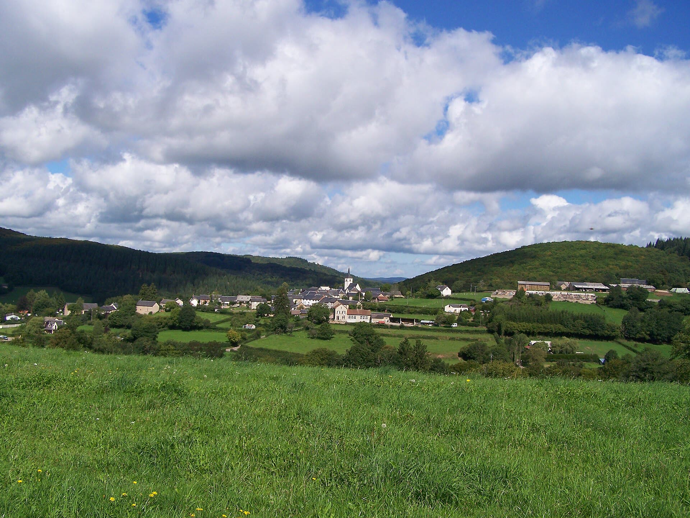
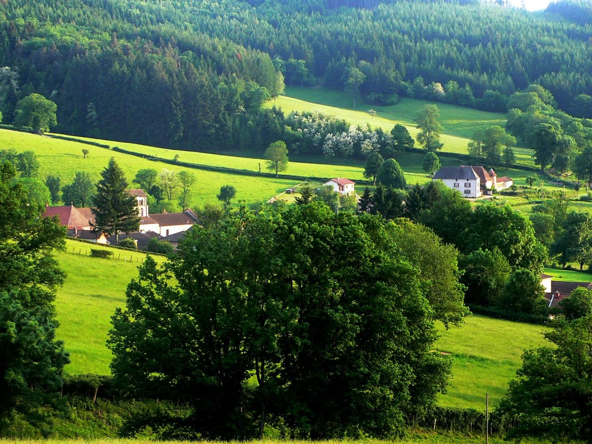
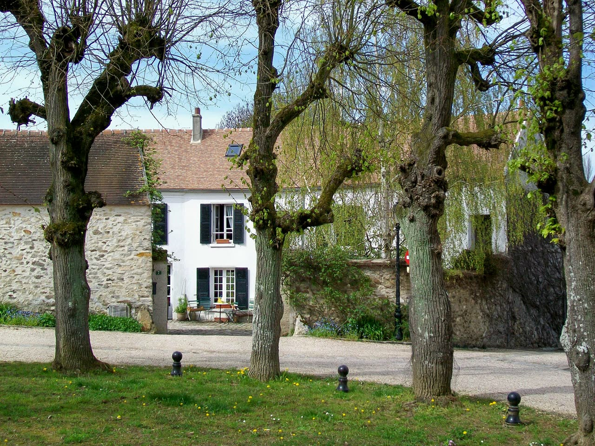
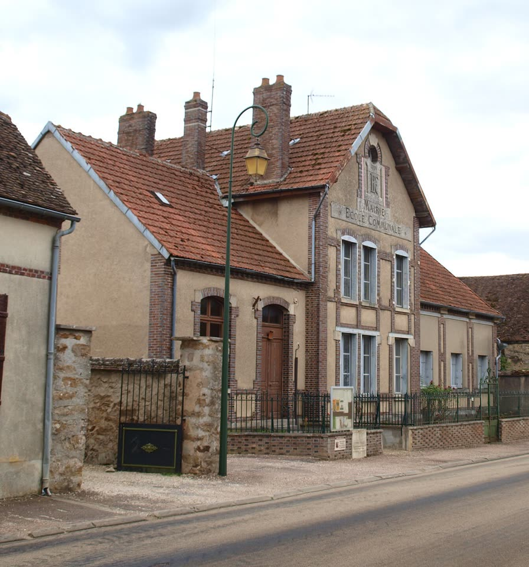
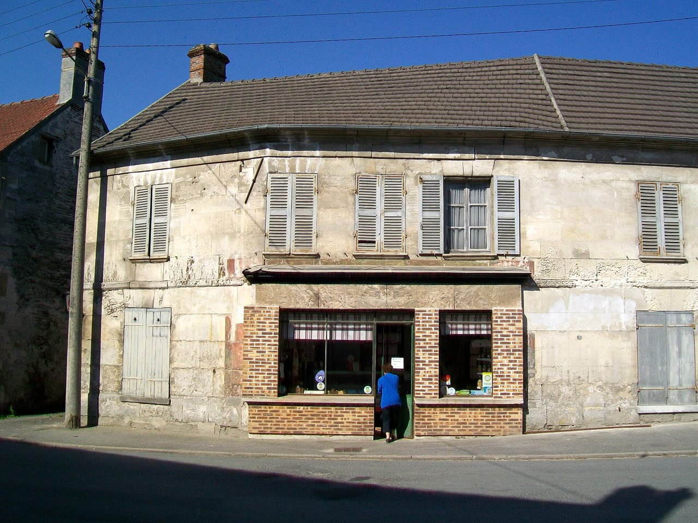
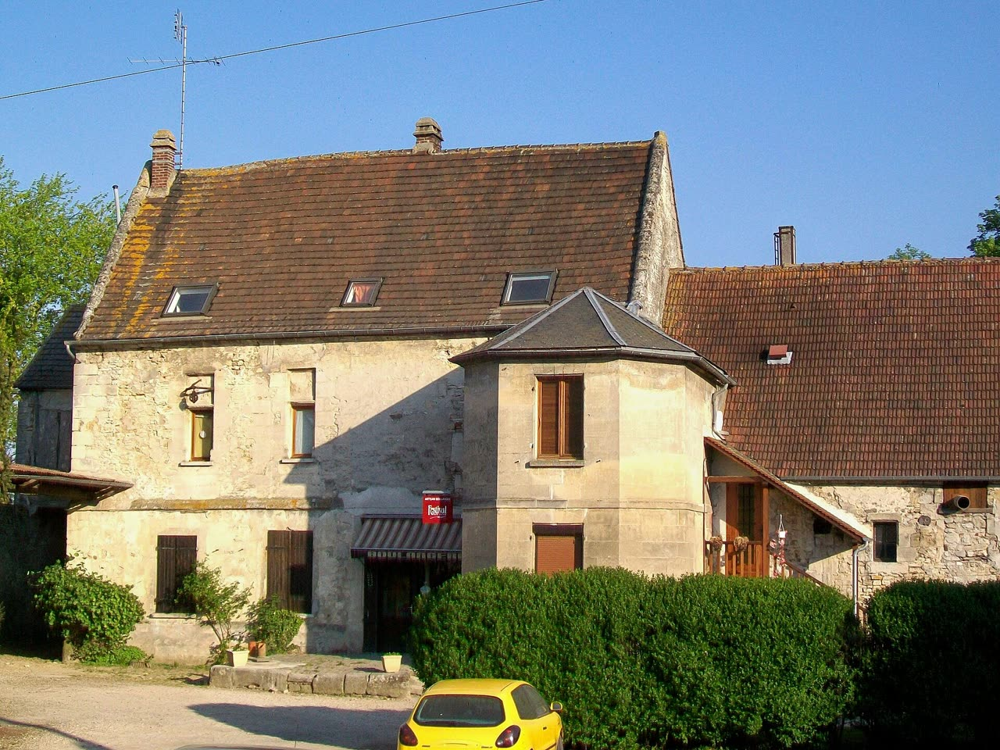
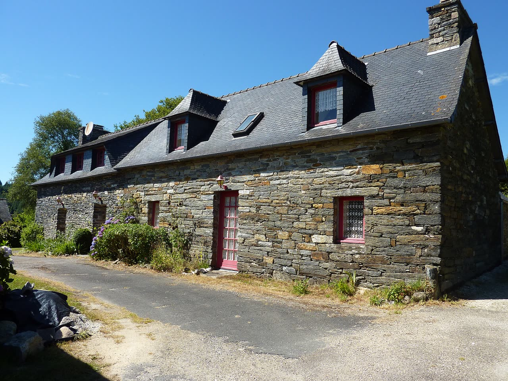

Saint-Aurèle
Loire (42) · Auvergne-Rhône-Alpes · 642 habitants · 520 m d'altitude
96 % compatible avec vos critères





L'essentiel
Transports
Lyon en 55 min
Gare TER à 6 km, 14 trains par jour vers Lyon Part-Dieu. Saint-Étienne à 40 min en voiture.
Calculé · SNCF Open Data
Connexion
Fibre 1 Gbit/s
100 % des logements raccordables. 4G des quatre opérateurs au bourg.
Calculé · Arcep
École
École sur place
École publique des Tilleuls, 3 classes, 58 élèves. Cantine et garderie de 7 h 30 à 18 h 30.
Calculé · Éducation nationale
Santé
Médecin à 5 km
Maison de santé : 3 généralistes, nouveaux patients acceptés. Cabinet infirmier au village.
Calculé · Annuaire santé
Commerces
4 au bourg
Boulangerie, épicerie avec relais poste, bar-restaurant, marché le samedi matin.
Calculé · Insee, base des équipements
Immobilier
8,10 €/m² loué
Maisons vendues 1 720 €/m² en moyenne. 41 logements vacants dans la commune.
Calculé · DVF, LOVAC
Données publiques mises à jour automatiquement le 14 octobre 2026.
Le mot de la maire
« En 2023, notre école a failli perdre une classe. Depuis, la fibre est arrivée, le TER passe toutes les heures à dix minutes d'ici, et nous avons des maisons qui attendent des familles. Ce que nous voulons, ce sont des voisins : des gens qui inscrivent leurs enfants à l'école, qui viennent au marché, qui s'engagent dans une association. Venez passer deux semaines avec nous, vous jugerez par vous-même. »
Hélène Garnier, maire de Saint-Aurèle
Ce que la commune vous propose
Prime d'accueil de 1 500 €
Pour chaque famille qui inscrit au moins un enfant à l'école.
Bureau en mairie offert
Un poste de télétravail fibré, gratuit les 6 premiers mois.
Aide à la rénovation
Rendez-vous avec le conseiller France Rénov' organisé par la mairie.
Logements disponibles
Maison de bourg, 5 pièces
110 m², jardin de 400 m², 3 chambres. À 200 m de l'école.
Correspond à vos critères
820 €/mois charges comprises

À louer
Longère rénovée, 4 pièces
125 m², terrain de 3 000 m², poêle à bois. Hameau des Combes, à 2 km du bourg.
178 000 €

À vendre
Appartement communal, 3 pièces
68 m² au-dessus de la mairie-école, entièrement rénové en 2025.
540 €/mois charges comprises
À louer
Emplois et activités à reprendre
Boulangerie-pâtisserie à reprendre
Martine et Gérard Roche partent à la retraite en juin 2027. Fonds rentable, clientèle fidèle, logement de 90 m² à l'étage. Accompagnement possible par la chambre de métiers.
Infirmier ou infirmière libérale
Le cabinet infirmier du village cherche une troisième personne associée. Patientèle existante, local en rez-de-chaussée.
Correspond à votre projet
Agent ou agente technique polyvalent
Entretien des espaces verts et des bâtiments communaux, déneigement en hiver.
Vie locale
14 associations font vivre le village, de la chorale au club de foot. La bibliothèque est tenue par des bénévoles et ouvre trois fois par semaine.
Votre habitant référent
Karim Benali, arrivé de Lyon en 2022 avec sa famille, développeur en télétravail.
« J'étais exactement à votre place il y a quatre ans. Je vous fais visiter le village, je vous présente aux voisins et je réponds à toutes vos questions, même celles qu'on n'ose pas poser à la mairie. »
Être mis en relation